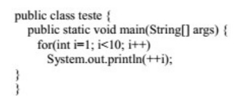

1. Ano: 2018Banca: SUGEP – UFRPE Órgão: UFRPE Prova: Técnico de Tecnologia da Informação - Sistemas
Qual das alternativas abaixo apresenta um método que concatena dois objetos do tipo String em Java?
2. Ano: 2012Banca: CESPE Órgão: TJ-RO Prova: Analista Judiciário - Análise de Sistemas - Desenvolvimento
Assinale a opção correta no que se refere aos operadores da linguagem Java.
3. Ano: 2018 Banca: CONSULPLAN Órgão: Câmara de Belo Horizonte – MG Prova: Analista de Tecnologia da Informação -
Desenvolvimento de Sistema
Sobre a linguagem Java, em relação à entrada/saída e operadores, assinale a alternativa INCORRETA.
4. Ano: 2018 Banca: CONSULPLAN Órgão: Câmara de Belo Horizonte – MG Prova: Analista de Tecnologia da Informação -
Desenvolvimento de Sistema
Acerca da linguagem de programação Java, “um método declarado _______________ não pode acessar as variáveis de
instância e os métodos de instância da classe, porque um método _______________ pode ser chamado mesmo quando nenhum
objeto da classe foi instanciado.” Assinale a alternativa que completa correta e sequencialmente a afirmativa
anterior.
5. Ano: 2017 Banca: INAZ do Pará Órgão: CFF Prova: Programador
Analise o trecho de código a seguir.

Qual será o resultado?
6. Ano: 2017Banca: CONSULPLAN Órgão: TRE-RJ Prova: Analista Judiciário - Análise de Sistemas
Acerca da programação orientada a objetos, usando Java, analise a seguinte assertiva: “O Java contém três tipos de
instruções de seleção”. Assinale-as.
7. Ano: 2013bBanca: VUNESP Órgão: MPE-ES Prova: Agente Especializado - Analista de Sistemas
Na linguagem Java, os tipos primitivos são:
| LISTA ANTERIOR | PRÓXIMA LISTA |
|---|